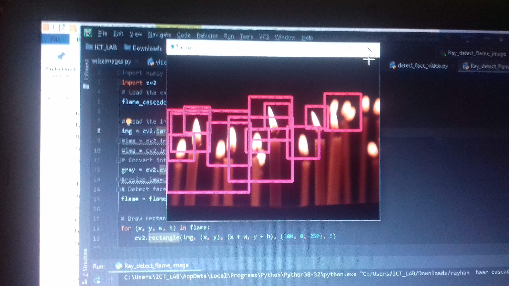
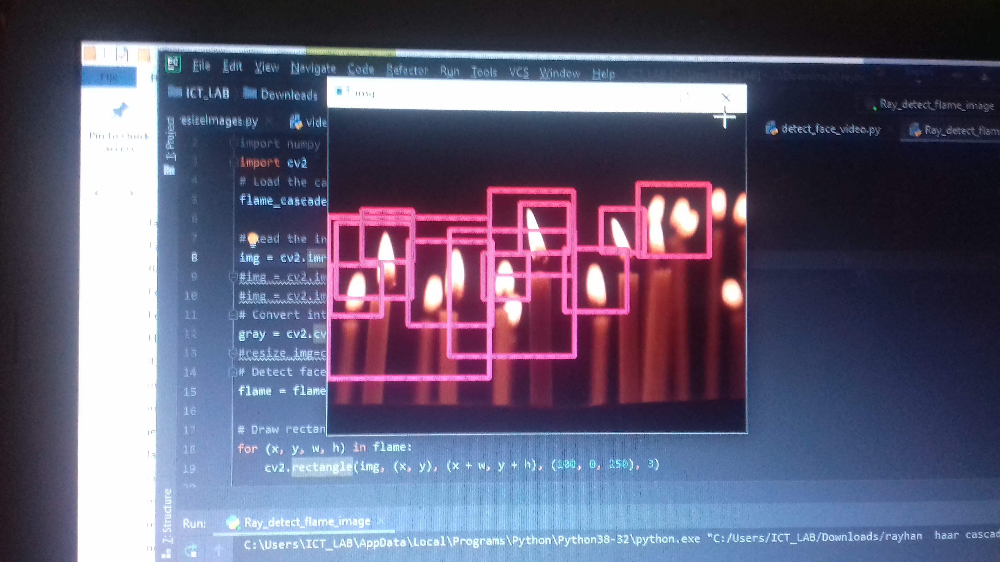

The beauty you see here is a reflection of your good thought.Thank You.
We use form submit.com to maintain email communications.Please fill in the form and leave a line to us.
ইব্রাহীম ইহুদী ছিলেন না এবং নাসারাও ছিলেন না, তিনি ছিলেন `হানীফ' অর্থাৎ, সব মিথ্যা ধর্মের প্রতি বিমুখ এবং আত্নসমর্পণকারী, এবং তিনি মুশরিক ছিলেন না। [সুরা ইমরান - ৩:৬৭]
তিনিই আপনার প্রতি কিতাব নাযিল করেছেন। তাতে কিছু আয়াত রয়েছে সুস্পষ্ট, সেগুলোই কিতাবের আসল অংশ। আর অন্যগুলো রূপক। সুতরাং যাদের অন্তরে কুটিলতা রয়েছে, তারা অনুসরণ করে ফিৎনা বিস্তার এবং অপব্যাখ্যার উদ্দেশে তন্মধ্যেকার রূপকগুলোর। আর সেগুলোর ব্যাখ্যা আল্লাহ ব্যতীত কেউ জানে না। আর যারা জ্ঞানে সুগভীর, তারা বলেনঃ আমরা এর প্রতি ঈমান এনেছি। এই সবই আমাদের পালনকর্তার পক্ষ থেকে অবতীর্ণ হয়েছে। আর বোধশক্তি সম্পন্নেরা ছাড়া অপর কেউ শিক্ষা গ্রহণ করে না। [সুরা ইমরান - ৩:৭]
তিনি আপনার প্রতি কিতাব নাযিল করেছেন সত্যতার সাথে; যা সত্যায়ন করে পূর্ববর্তী কিতাবসমুহের। [সুরা ইমরান - ৩:৩]
আমি তোমাদের প্রতি অবতীর্ণ করেছি সুস্পষ্ট আয়াতসমূহ, তোমাদের পূর্ববর্তীদের কিছু দৃষ্টান্ত এবং আল্লাহ ভীরুদের জন্যে দিয়েছি উপদেশ। [সুরা নুর - ২৪:৩৪]
মানবকূলকে মোহগ্রস্ত করেছে নারী, সন্তান-সন্ত তি, রাশিকৃত স্বর্ণ-রৌপ্ য, চিহ্নিত অশ্ব, গবাদি পশুরাজি এবং ক্ষেত-খামার ের মত আকর্ষণীয় বস্তুসামগ্রী। এসবই হচ্ছে পার্থিব জীবনের ভোগ্য বস্তু। আল্লাহর নিকটই হলো উত্তম আশ্রয়। [সুরা ইমরান - ৩:১৪]
রহমান-এর বান্দা তারাই, যারা পৃথিবীতে নম্রভাবে চলাফেরা করে এবং তাদের সাথে যখন মুর্খরা কথা বলতে থাকে, তখন তারা বলে, সালাম। [সুরা ফুরকান - ২৫:৬৩]
আমি তোমাদের প্রতি অবতীর্ণ করেছি সুস্পষ্ট আয়াতসমূহ, তোমাদের পূর্ববর্তীদের কিছু দৃষ্টান্ত এবং আল্লাহ ভীরুদের জন্যে দিয়েছি উপদেশ। [সুরা নুর - ২৪:৩৪]
যারা স্বচ্ছলতায় ও অভাবের সময় ব্যয় করে, যারা নিজেদের রাগকে সংবরণ করে আর মানুষের প্রতি ক্ষমা প্রদর্শন করে, বস্তুতঃ আল্লাহ সৎকর্মশীলদিগকেই ভালবাসেন। [সুরা ইমরান - ৩:১৩৪]
এতীমদেরকে তাদের সম্পদ বুঝিয়ে দাও। খারাপ মালামালের সাথে ভালো মালামালের অদল-বদল করো না। আর তাদের ধন-সম্পদ নিজেদের ধন-সম্পদের সাথে সংমিশ্রিত করে তা গ্রাস করো না। নিশ্চয় এটা বড়ই মন্দ কাজ। [সুরা নিসা - ৪:২]
যারা এতীমদের অর্থ-সম্পদ অন্যায়ভাবে খায়, তারা নিজেদের পেটে আগুনই ভর্তি করেছে এবং সত্ত্বরই তারা অগ্নিতে প্রবেশ করবে। [সুরা নিসা - ৪:১০]
অবশ্যই আল্লাহ তাদের তওবা কবুল করবেন, যারা ভূলবশতঃ মন্দ কাজ করে, অতঃপর অনতিবিলম্বে তওবা করে; এরাই হল সেসব লোক যাদেরকে আল্লাহ ক্ষমা করে দেন। আল্লাহ মহাজ্ঞানী, রহস্যবিদ। [সুরা নিসা - ৪:১৭]
আর এমন লোকদের জন্য কোন ক্ষমা নেই, যারা মন্দ কাজ করতেই থাকে, এমন কি যখন তাদের কারো মাথার উপর মৃত্যু উপস্থিত হয়, তখন বলতে থাকেঃ আমি এখন তওবা করছি। আর তওবা নেই তাদের জন্য, যারা কুফরী অবস্থায় মৃত্যুবরণ করে। আমি তাদের জন্য যন্ত্রণাদায়ক শাস্তি প্রস্তুত করে রেখেছি। [সুরা নিসা - ৪:১৮]
হে ঈমানদারগণ! তোমরা একে অপরের সম্পদ অন্যায়ভাবে গ্রাস করো না। কেবলমাত্র তোমাদের পরস্পরের সম্মতিক্রমে যে ব্যবসা করা হয় তা বৈধ। আর তোমরা নিজেদের কাউকে হত্যা করো না। নিঃসন্দেহে আল্লাহ তা'আলা তোমাদের প্রতি দয়ালু। [সুরা নিসা - ৪:২৯]
তুমি কি তাদেকে দেখনি, যারা নিজেদেরকে পূত-পবিত্র বলে থাকে অথচ পবিত্র করেন আল্লাহ যাকে ইচ্ছা তাকেই? বস্তুতঃ তাদের উপর সুতা পরিমাণ অন্যায়ও হবে না। [সুরা নিসা - ৪:৪৯]
নিশ্চয়ই আল্লাহ তোমাদিগকে নির্দেশ দেন যে, তোমরা যেন প্রাপ্য আমানতসমূহ প্রাপকদের নিকট পৌছে দাও। আর যখন তোমরা মানুষের কোন বিচার-মীমাং সা করতে আরম্ভ কর, তখন মীমাংসা কর ন্যায় ভিত্তিক। আল্লাহ তোমাদিগকে সদুপদেশ দান করেন। নিশ্চয়ই আল্লাহ শ্রবণকারী, দর্শনকারী। [সুরা নিসা - ৪:৫৮]
যে লোক রসূলের হুকুম মান্য করবে সে আল্লাহরই হুকুম মান্য করল। আর যে লোক বিমুখতা অবলম্বন করল, আমি আপনাকে (হে মুহাম্মদ), তাদের জন্য রক্ষণাবেক্ষণকারী নিযুক্ত করে পাঠাইনি। [সুরা নিসা - ৪:৮০]
যে কেউ আল্লাহর পথে দেশত্যাগ করে, সে এর বিনিময়ে অনেক স্থান ও সচ্ছলতা প্রাপ্ত হবে। যে কেউ নিজ গৃহ থেকে বের হয় আল্লাহ ও রসূলের প্রতি হিজরত করার উদ্দেশে, অতঃপর মৃত্যুমুখে পতিত হয়, তবে তার সওয়াব আল্লাহর কাছে অবধারিত হয়ে যায়। আল্লাহ ক্ষমাশীল, করুণাময়। [সুরা নিসা - ৪:১০০]
হে ঈমানদারগণ, তোমরা ন্যায়ের উপর প্রতিষ্ঠিত থাক; আল্লাহর ওয়াস্তে ন্যায়সঙ্গত সাক্ষ্যদান কর, তাতে তোমাদের নিজের বা পিতা-মাতার অথবা নিকটবর্তী আত্নীয়-স্ব জনের যদি ক্ষতি হয় তবুও। কেউ যদি ধনী কিংবা দরিদ্র হয়, তবে আল্লাহ তাদের শুভাকাঙ্খী তোমাদের চাইতে বেশী। অতএব, তোমরা বিচার করতে গিয়ে রিপুর কামনা-বাসনা র অনুসরণ করো না। আর যদি তোমরা ঘুরিয়ে-পেঁ চিয়ে কথা বল কিংবা পাশ কাটিয়ে যাও, তবে আল্লাহ তোমাদের যাবতীয় কাজ কর্ম সম্পর্কেই অবগত। [সুরা নিসা - ৪:১৩৫]
বলুনঃ আমার পালনকর্তার কথা, লেখার জন্যে যদি সমুদ্রের পানি কালি হয়, তবে আমার পালনকর্তার কথা, শেষ হওয়ার আগেই সে সমুদ্র নিঃশেষিত হয়ে যাবে। সাহায্যার্থে অনুরূপ আরেকটি সমুদ্র এনে দিলেও। [সুরা কা’হফ - ১৮:১০৯]
বলুনঃ আমি ও তোমাদের মতই একজন মানুষ, أَنَا بَشَرٌ مِّثْلُكُمْ আমার প্রতি প্রত্যাদেশ হয় যে, তোমাদের ইলাহই একমাত্র ইলাহ। অতএব, যে ব্যক্তি তার পালনকর্তার সাক্ষাত কামনা করে, সে যেন, সৎকর্ম সম্পাদন করে এবং তার পালনকর্তার এবাদতে কাউকে শরীক না করে। [সুরা কা’হফ - ১৮:১১০]
আপনার পূর্বে আমি মানুষই প্রেরণ করেছি, যাদের কাছে আমি ওহী পাঠাতাম। অতএব তোমরা যদি না জান তবে যারা স্মরণ রাখে তাদেরকে জিজ্ঞেস কর। [সুরা আম্বিয়া - ২১:৭]
বরং আমি সত্যকে মিথ্যার উপর নিক্ষেপ করি, অতঃপর সত্য মিথ্যার মস্তক চুর্ণ-বিচূর ্ণ করে দেয়, অতঃপর মিথ্যা তৎক্ষণাৎ নিশ্চিহ্ন হয়ে যায়। তোমরা যা বলছ, তার জন্যে তোমাদের দুর্ভোগ। [সুরা আম্বিয়া - ২১:১৮]
হে লোকসকল! যদি তোমরা পুনরুত্থানের ব্যাপারে সন্দিগ্ধ হও, তবে (ভেবে দেখ-) আমি তোমাদেরকে মৃত্তিকা থেকে সৃষ্টি করেছি। এরপর বীর্য থেকে, এরপর জমাট রক্ত থেকে, এরপর পূর্ণাকৃতিবিশিষ্ট ও অপূর্ণাকৃতিবিশিষ্ট মাংসপিন্ড থেকে, তোমাদের কাছে ব্যক্ত করার জন্যে। আর আমি এক নির্দিষ্ট কালের জন্যে মাতৃগর্ভে যা ইচ্ছা রেখে দেই, এরপর আমি তোমাদেরকে শিশু অবস্থায় বের করি; তারপর যাতে তোমরা যৌবনে পদার্পণ কর। তোমাদের মধ্যে কেউ কেউ মৃত্যুমুখে পতিত হয় এবং তোমাদের মধ্যে কাউকে নিষ্কর্মা বয়স পর্যন্ত পৌছানো হয়, যাতে সে জানার পর জ্ঞাত বিষয় সম্পর্কে সজ্ঞান থাকে না। তুমি ভূমিকে পতিত দেখতে পাও, অতঃপর আমি যখন তাতে বৃষ্টি বর্ষণ করি, তখন তা সতেজ ও স্ফীত হয়ে যায় এবং সর্বপ্রকার সুদৃশ্য উদ্ভিদ উৎপন্ন করে। [সুরা হাজ্জ্ব - ২২:৫]
যারা বিশ্বাস স্থাপন করে ও সৎকর্ম সম্পাদন করে, আল্লাহ তাদেরকে জান্নাতে দাখিল করবেন, যার তলদেশ দিয়ে নির্ঝরণীসমূহ প্রবাহিত হয়। আল্লাহ যা ইচ্ছা তাই করেন। [সুরা হাজ্জ্ব - ২২:১৪]
যারা আল্লাহর পথে গৃহ ত্যাগ করেছে, এরপর নিহত হয়েছে অথবা মরে গেছে; আল্লাহ তাদেরকে অবশ্যই উৎকৃষ্ট জীবিকা দান করবেন এবং আল্লাহ সর্বোৎকৃষ্ট রিযিক দাতা। [সুরা হাজ্জ্ব - ২২:৫৮]
তিনিই তোমাদেরকে জীবিত করেছেন, অতঃপর তিনিই তোমাদেরকে মৃত্যুদান করবেন ও পুনরায় জীবিত করবেন। নিশ্চয় মানুষ বড় অকৃতজ্ঞ। [সুরা হাজ্জ্ব - ২২:৬৬]
আল্লাহ ফেরেশতা ও মানুষের মধ্য থেকে রাসূল মনোনীত করেন। আল্লাহ সর্বশ্রোতা, সর্ব দ্রষ্টা! [সুরা হাজ্জ্ব - ২২:৭৫]
তোমরা আল্লাহর জন্যে শ্রম স্বীকার কর যেভাবে শ্রম স্বীকার করা উচিত। তিনি তোমাদেরকে পছন্দ করেছেন এবং ধর্মের ব্যাপারে তোমাদের উপর কোন সংকীর্ণতা রাখেননি। তোমরা তোমাদের পিতা ইব্রাহীমের ধর্মে কায়েম থাক। তিনিই তোমাদের নাম মুসলমান রেখেছেন পূর্বেও এবং এই কোরআনেও, যাতে রসূল তোমাদের জন্যে সাক্ষ্যদাতা এবং তোমরা সাক্ষ্যদাতা হও মানবমন্ডলির জন্যে। সুতরাং তোমরা নামায কায়েম কর, যাকাত দাও এবং আল্লাহকে শক্তভাবে ধারণ কর। তিনিই তোমাদের মালিক। অতএব তিনি কত উত্তম মালিক এবং কত উত্তম সাহায্যকারী। [সুরা হাজ্জ্ব - ২২:৭৮]
আপনাদের এই উম্মত সব তো একই ধর্মের অনুসারী এবং আমি আপনাদের পালনকর্তা; অতএব আমাকে ভয় করুন। [সুরা মু’মিনুন - ২৩:৫২]
অতঃপর মানুষ তাদের বিষয়কে বহুধা বিভক্ত করে দিয়েছে। প্রত্যেক সম্প্রদায় নিজ নিজ মতবাদ নিয়ে আনন্দিত হচ্ছে। [সুরা মু’মিনুন - ২৩:৫৩]
অতএব তাদের কিছু কালের জন্যে তাদের অজ্ঞানতায় নিমজ্জত থাকতে দিন। [সুরা মু’মিনুন - ২৩:৫৪]
আল্লাহ কোন সন্তান গ্রহণ করেননি এবং তাঁর সাথে কোন মাবুদ নেই। থাকলে প্রত্যেক মাবুদ নিজ নিজ সৃষ্টি নিয়ে চলে যেত এবং একজন অন্যজনের উপর প্রবল হয়ে যেত। তারা যা বলে, তা থেকে আল্লাহ পবিত্র। [সুরা মু’মিনুন - ২৩:৯১]
তোমাদের মধ্যে যারা উচ্চমর্যাদা ও আর্থিক প্রাচুর্যের অধিকারী, তারা যেন কসম না খায় যে, তারা আত্নীয়-স্ব জনকে, অভাবগ্রস্তকে এবং আল্লাহর পথে হিজরতকারীদেরকে কিছুই দেবে না। তাদের ক্ষমা করা উচিত এবং দোষক্রটি উপেক্ষা করা উচিত। তোমরা কি কামনা কর না যে, আল্লাহ তোমাদেরকে ক্ষমা করেন? আল্লাহ ক্ষমাশীল, পরম করুণাময়। [সুরা নুর - ২৪:২২]
এ পি জে আব্দুল কালাম ..... আবুল পাকির জয়নুল আবেদিন আবদুল কালাম (১৫ অক্টোবৰ ১৯৩১ - ২৭ জুলাই ২০১৫) ভারতের প্রাক্তন রাষ্ট্রপতি এবং সেদেশের বিশিষ্ট বিজ্ঞানী।
আমি সুদর্শন ব্যক্তি নই। কিন্তু আমি আমার হাত তার জন্য বাড়িয়ে দিতে পারি যার সাহায্য প্রয়োজন। সৌন্দর্য মানুষের হৃদয়ে থাকে, মুখে বা বাইরে নয়।
আমরা প্রত্যেকেই ভেতরে ঐশ্বরিক আগুন নিয়ে জন্মায়। আমাদের চেষ্টা করা উচিত এই আগুনে ডানা যুক্ত করার এবং এর মঙ্গলময়তার আলোয় জগত পূর্ণ করা।
আকাশের দিকে তাকাও। আমরা একা নই। পুরো মহাবিশ্ব আমাদের প্রতি বন্ধুত্বসুলভ। যারা স্বপ্ন দেখে এবং কাজ করে শুধুমাত্র তাদেরকেই শ্রেষ্ঠটা দেওয়ার জন্য চক্রান্তে লিপ্ত এই বিশ্ব।
আপনার স্বপ্ন সত্যি করার আগে স্বপ্ন দেখতে হবে। ওটা স্বপ্ন নয় যেটা আপনি ঘুমিয়ে দেখেন, স্বপ্ন তা-ই যা আপনাকে ঘুমোতে দেয় না।
আমি আবিষ্কার করলাম সবচেয়ে দ্রুতগতিতে বেশী বিক্রি হয়ে যায় সিগারেট ও বিড়ি। অবাক হয়ে ভাবতাম, গরিব মানুষেরা তাদের কঠোর পরিশ্রমে উপার্জিত অর্থ এভাবে ধোঁয়া গিলে উড়িয়ে দেয় কেন?
যদি তুমি তোমার কাজকে স্যালুট কর, দেখো তোমায় আর কাউকে স্যালুট করতে হবে না। কিন্তু তুমি যদি তোমার কাজকে অসম্মান কর, অমর্যাদা কর, ফাঁকি দাও, তাহলে তোমায় সবাইকে স্যালুট করতে হবে।
আমরা শুধু সাফল্যের উপরেই গড়ি না, আমরা ব্যর্থতার উপরেও গড়ি।
আমি এ কথা বলব না যে আমার জীবন অন্য কারো জন্য রোল মডেল হতে পারে। কিন্তু আমার নিয়তি যেভাবে গড়ে উঠেছে তাতে গরিব শিশুরা হয়তো বা একটু সান্ত্বনা পেতে পারে।
আমি কখনো সন্দেহ করিনি যে আমাদের মসজিদের প্রার্থনা যেখানে পৌঁছায়, সেই একই গন্তব্যে পৌঁছায় মন্দিরের প্রার্থনাও।
আমি জানতাম সামনের দিনগুলো আরও সংকটময় হবে। প্রশ্ন ছিল যার উত্তর দিতে হবে এবং কর্মপরিকল্পনা যা প্রস্তুত করতে হবে।
আমি ভাবি, কেন কিছু মানুষ মনে করে বিজ্ঞান মানুষকে দূরে সরিয়ে নিয়ে যায় খোদার কাছ থেকে ? আমি এটাকে যেভাবে দেখি তাহলো, বিজ্ঞানের পথ সর্বদা হৃদয়ের ভিতর দিয়ে প্রবাহিত হতে পারে। আমার ক্ষেত্রে বিজ্ঞান হচ্ছে আধ্যাত্মিক সমৃদ্ধি ও আত্ম-উপলব্ধির পথ।
একজন খারাপ ছাত্র একজন দক্ষ শিক্ষকের কাছ থেকে যা শিখতে পারে তার চেয়ে একজন ভালো ছাত্র একজন খারাপ শিক্ষকের কাছ থেকে অনেক বেশী শিখতে পারে ।
একটি দেশকে যদি দুর্নীতিমুক্ত করতে হয় ও দেশের সব মানুষকে যদি সুন্দর মনের করে গড়ে তুলতে হয় তাহলে আমি মনে করি সমাজের তিন ধরনের মানুষ সে কাজটি করতে পারেন। তারা হলেন- একজন বাবা, একজন মা এবং একজন শিক্ষক।
কেউ তার ভবিষ্যৎ বদলাতে পারে না, তবে অভ্যাস বদলাতে পারে। আর অবশ্যই অভ্যাস ভবিষ্যৎ বদলে দিতে পারে।
কাউকে হারিয়ে দেয়াটা খুব সহজ, কিন্তু কঠিন হলো কারোর মন জয় করা।
ছাত্রদের মাঝে অনুসন্ধান, সৃজনশীলতা, উদ্যোক্তা এবং নৈতিক নেতৃত্বের সক্ষমতা তৈরি করা উচিত শিক্ষাবিদদের।
জীবন একটি কঠিন খেলা। ব্যক্তি হিসেবে মৌলিক অধিকার ধরে রাখার মাধ্যমেই শুধুমাত্র তুমি সেখানে জয়ী হতে পারবে।
দ্রুত কিন্তু কৃত্রিম আনন্দের পেছনে না ছুটে বরং নিখাদ সাফল্য অর্জনের জন্য আরও বেশি নিবেদিত প্রাণ হও।
প্রতিদিন সকালে এই পাঁচটা লাইন বলো :১) আমি সেরা। ২) আমি করতে পারি ৩) সৃষ্টিকর্তা সব সময় আমার সঙ্গে আছে ৪) আমি জয়ী ৫) আজ দিনটা আমার
প্রথম বিজয়ের পর বসে থাকবেন না। কারণ দ্বিতীয়বার যখন আপনি ব্যর্থ হবেন তখন অনেকেই বলবেন প্রথমটিতে শুধুমাত্র ভাগ্যের জোরে সফল হয়েছিলেন তিনি।
প্রশংসা করতে হবে প্রকাশ্যে কিন্তু সমালোচনা ব্যক্তিগতভাবে।
বিজয়ী হওয়ার সর্বোত্তম পন্থা হচ্ছে বিজয়ী হওয়ার দরকার নেই মনে করা। তুমি যখন স্বাভাবিক আর সন্দেহমুক্ত থাকবে, তখনই তুমি ভালো ফলাফল করতে পারবে।
বৃষ্টির সময় প্রত্যেকটি পাখিই কোথাও না কোথাও আশ্রয় পায়। কিন্তু ঈগল মেঘের উপর দিয়ে উড়ে বৃষ্টিকে এড়িয়ে যায়।
ভিন্নভাবে চিন্তা করার ও উদ্ভাবনের সাহস থাকতে হবে, অপরিচিত পথে চলার ও অসম্ভব জিনিস আবিষ্কারের সাহস থাকতে হবে এবং সমস্যাকে জয় করে সফল হতে হবে। এ সকল মহানগুণের দ্বারা তরুণদের চালিত হতে হবে। তরুণ প্রজন্মের প্রতি এই আমার বার্তা।
যদি একটি দেশকে দুর্নীতিমুক্ত এবং সুন্দর মনের মানুষের জাতি হতে হয়, তাহলে আমি দৃঢ়ভাবে বিশ্বাস করি এ ক্ষেত্রে তিনজন সামাজিক সদস্য পার্থক্য এনে দিতে পারে। তারা হলেন বাবা, মা এবং শিক্ষক।
যারা হৃদয় দিয়ে কাজ করতে পারে না; তাদের অর্জন অন্তঃসারশূন্য, উৎসাহহীন সাফল্য চারদিকে তিক্ততার উদ্ভব ঘটায়।
যে অন্যদের জানে সে শিক্ষিত, কিন্তু জ্ঞানী হল সেই ব্যক্তি যে নিজেকে জানে। জ্ঞান ছাড়া শিক্ষা কোন কাজে আসেনা।
শ্রেষ্ঠত্ব একটি অবিরাম প্রক্রিয়া। এটা কোনো দুর্ঘটনা নয়।
সফলতার গল্পে কেবল একটি বার্তা থাকে। কিন্তু ব্যর্থতার গল্পে সফল হওয়ার উপায় থাকে।
সূর্যের মতো দীপ্তিমান হতে হলে প্রথমে তোমাকে সূর্যের মতোই পুড়তে হবে।
উৎকর্ষতা একটি চলমান প্রক্রিয়া এবং এটি কোনো আকস্মিক ঘটনা নয়।
একজন উদ্যমী ও একজন বিভ্রান্ত মানুষের মধ্যে পার্থক্য হচ্ছে, তাদের অভিজ্ঞতাকে তাদের মন যেভাবে ব্যবহার করে তার মধ্যে পার্থক্য।
Action and Reward
10. When the records are made public.
11. When the sky is peeled away.
12. When the Fire is set ablaze.
13. When Paradise is brought near.
14. Each soul will know what it has readied. Sura no 81:10-14 The Rolling. at-Takwir
31. To God belongs whatever is in the heavens and whatever is on earth. He will repay those who do evil according to their deeds, and recompense those who do good with the best.
32. Those who avoid gross sins and indecencies—except for minor lapses—your Lord is of Vast Forgiveness. He knows you well, ever since He created you from the earth, and ever since you were embryos in your mothers’ wombs. So do not acclaim your own virtue; He is fully aware of the righteous.
33. Have you considered him who turned away?
34. And gave a little, and held back?
35. Does he possess knowledge of the unseen, and can therefore foresee?
36. Or was he not informed of what is in the Scrolls of Moses?
37. And of Abraham, who fulfilled?
38. That no soul bears the burdens of another soul.
39. And that the human being attains only what he strives for.
40. And that his efforts will be witnessed.
41. Then he will be rewarded for it the fullest reward. Sura no 53:31-41 An Nazm
11. Those who believe and do righteous deeds will have Gardens beneath which rivers flow. That is the great triumph.Sura Buruz no 85:11
17. As the two receivers receive, seated to the right and to the left.50:17 Sura Qaf
18. Not a word does he utter, but there is a watcher by him, ready.50:18 Sura Qaf
23. And His escort will say, “This is what I have ready with me.” 50:11 Sura Qaf
52. Everything they have done is in the Books. 54:52 Sura Qamar
53. Everything, small or large, is written down. 54:53 Sura Qamar
কর্ম প্রতিদান কর্মের প্রতিফল
যখন আমলনামা খোলা হবে,
যখন আকাশের আবরণ অপসারিত হবে,
যখন জাহান্নামের অগ্নি প্রজ্বলিত করা হবে
এবং যখন জান্নাত সন্নিকটবর্তী হবে,
তখন প্রত্যেকেই জেনে নিবে সে কি উপস্থিত করেছে। [সুরা তাকভীর - ৮১:১০--১৪]
নভোমন্ডল ও ভূমন্ডলে যা কিছু আছে, সবই আল্লাহর, যাতে তিনি মন্দকর্মীদেরকে তাদের কর্মের প্রতিফল দেন এবং সৎকর্মীদেরকে দেন ভাল ফল।
যারা বড় বড় গোনাহ ও অশ্লীলকার্য থেকে বেঁচে থাকে ছোটখাট অপরাধ করলেও নিশ্চয় আপনার পালনকর্তার ক্ষমা সুদূর বিস্তৃত। তিনি তোমাদের সম্পর্কে ভাল জানেন, যখন তিনি তোমাদেরকে সৃষ্টি করেছেন মৃত্তিকা থেকে এবং যখন তোমরা মাতৃগর্ভে কচি শিশু ছিলে। অতএব তোমরা আত্নপ্রশংসা করো না। তিনি ভাল জানেন কে সংযমী।
আপনি কি তাকে দেখেছেন, যে মুখ ফিরিয়ে নেয়।
এবং দেয় সামান্যই ও পাষাণ হয়ে যায়।
তার কাছে কি অদৃশ্যের জ্ঞান আছে যে, সে দেখে?
তাকে কি জানানো হয়নি যা আছে মূসার কিতাবে,
এবং ইব্রাহীমের কিতাবে, যে তার দায়িত্ব পালন করেছিল?
কিতাবে এই আছে যে, কোন ব্যক্তি কারও গোনাহ নিজে বহন করবে না।
এবং মানুষ তাই পায়, যা সে করে,
তার কর্ম শীঘ্রই দেখা হবে।
অতঃপর তাকে পূর্ণ প্রতিদান দেয়া হবে। [সুরা নাজম - ৫৩:৩১-৪১]
যারা ঈমান আনে ও সৎকর্ম করে তাদের জন্যে আছে জান্নাত, যার তলদেশে প্রবাহিত হয় নির্ঝরিণীসমূহ। এটাই মহাসাফল্য। [সুরা বুরূজ - ৮৫:১১]
যখন দুই ফেরেশতা ডানে ও বামে বসে তার আমল গ্রহণ করে।
সে যে কথাই উচ্চারণ করে, তাই গ্রহণ করার জন্যে তার কাছে সদা প্রস্তুত প্রহরী রয়েছে। [সুরা ক্বাফ - ৫০:১৭-১৮]
তার সঙ্গী ফেরেশতা বলবেঃ আমার কাছে যে, আমলনামা ছিল, তা এই। [সুরা ক্বাফ - ৫০:২৩]
তারা যা কিছু করেছে, সবই আমলনামায় লিপিবদ্ধ আছে। [সুরা ক্বামার - ৫৪:৫২]
 
